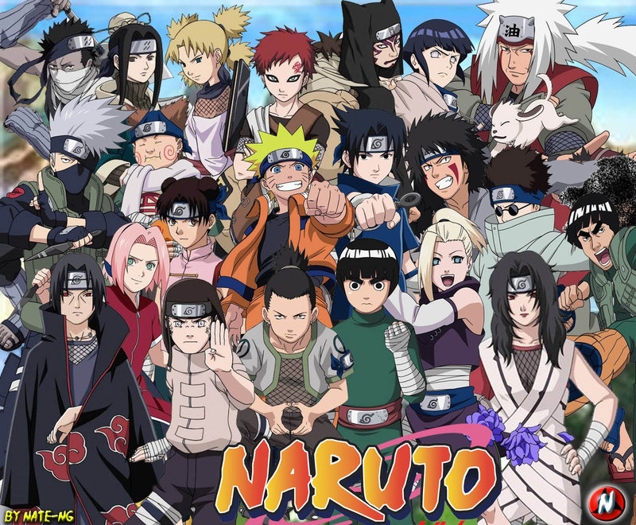
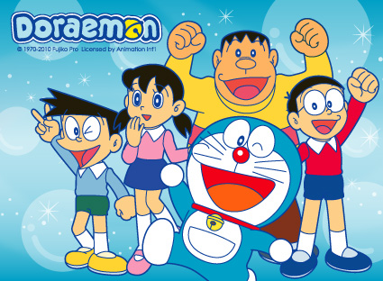
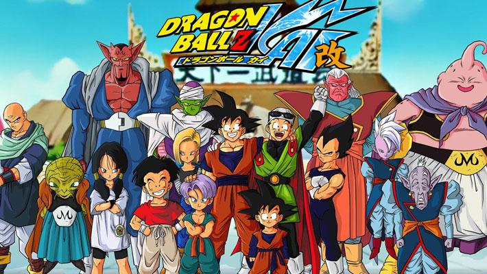

Blink182
4 Anime Terpopuler
Versi Blink182
Naruto
-
Naruto adalah sebuah serial manga karya Masashi Kishimoto yang diadaptasi menjadi serial anime. Manga Naruto bercerita seputar kehidupan tokoh utamanya, Naruto Uzumaki, seorang ninja yang berisik, hiperaktif, dan ambisius yang ingin mewujudkan keinginannya untuk mendapatkan gelar Hokage, pemimpin dan ninja terkuat di desanya. Serial ini didasarkan pada komik one-shot oleh Kishimoto yang diterbitkan dalam edisi Akamaru Jump pada Agustus 1997
- 
One Pice
-
One Piece adalah sebuah anime dan manga tentang sekelompok bajak laut yang dipimpin oleh Monkey D. Luffy yang pergi mencari harta karun legendaris bernama One Piece. Luffy menjadi manusia karet yang memiliki kekuatan memanjangkan tubuhnya setelah secara tak sengaja memakan buah Gomu Gomu, salah satu dari buah iblis. Selama perjalanan Luffy banyak bertemu dengan teman baru dan musuh yang beragam.

Doraemon
-
Doraemon adalah judul sebuah manga dan anime populer yang dikarang Fujiko F. Fujio sejak tahun 1969 dan berkisah tentang kehidupan seorang anak pemalas kelas 5 sekolah dasar yang bernama Nobi Nobita yang didatangi oleh sebuah robot kucing bernama Doraemon yang datang dari abad ke-22. Doraemon dikirim untuk menolong Nobita agar keturunan Nobita dapat menikmati kesuksesannya daripada harus menderita dari utang finansial yang akan terjadi di masa depan yang disebabkan karena kebodohan Nobita.
- 
Dragon Ball
-
Dragon Ball adalah sebuah manga dan anime Jepang yang dikarang oleh Akira Toriyama dari tahun 1984 sampai 1995. Albumnya terdiri dari 42 buku dan di Indonesia diterbitkan oleh Elex Media Komputindo. Sebelumnya Dragon Ball juga pernah diterbitkan oleh Rajawali Grafiti.
- 